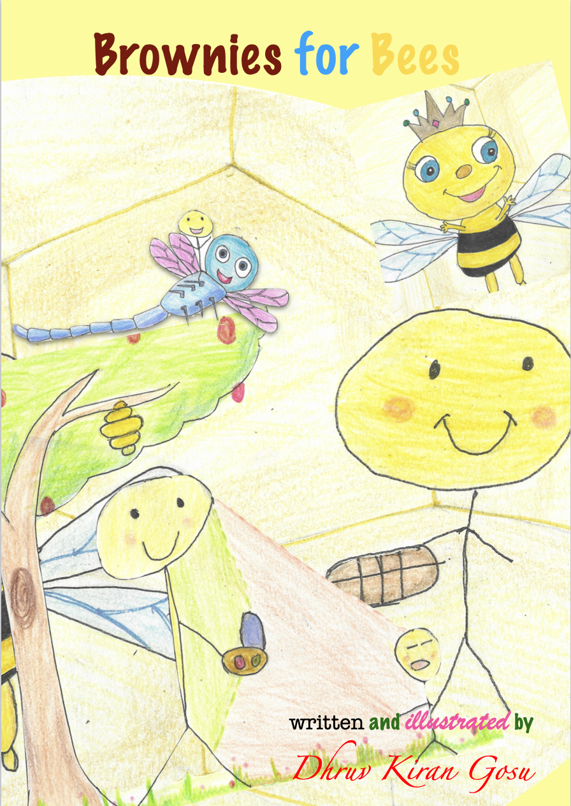
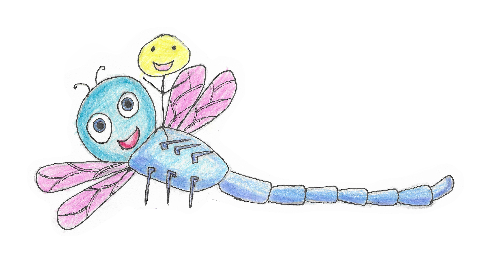

Brownies for Bees 🐝

Once there lived a little boy called George, who was very adventurous. One morning he was eating Toast with honey and he remembered that bees give honey. So he thought of a plan. He packed some delicious Brownies that his mum made and he set off to the beehive in his garden. He shrank himself using the Shrink machine that he made. Then he realised the problem...

George realised that it will take him many days to reach the beehive because he was very small as he had shrunk himself. He was unhappy that his plan failed. He was worried that he can't reach the beehive quickly.
While George was sadly sitting in his garden, he heard a buzzing sound. He wondered if it was a bee... But it was a dragonfly. George was not so happy to see the dragonfly. "Who are you young boy? Why are you so sad?" asked the Dragonfly. "I wanted to go to the beehive and meet the bees, but I shrank myself. Now it will take days and days for me to walk" replied George sulkily.

"I can help you. I am from Insectnational Rescue Team. We rescue and help whoever is in trouble" told the dragonfly. "Hop on board and I will take you to the Beehive" suggested the dragonfly. George hopped on happily. "Hold on tight!" said the dragonfly and flew him to the beehive. George thanked the dragonfly for its help and the dragonfly replied "Whenever you are in trouble, just remember to call 999 and ask for help" and flew away.

The beehive was filled with busy bees and it was so confusing for George to find the Queen bee. Luckily, he found a sign board which read "Way to Queen Bee's Throne". When he arrived there, he found a sign on the door saying, "The Queen bee is buzzzzzy". So he waited patiently for the Queen bee to be free. Sometime later, a worker bee came and turned the sign board which now read "Free to meet".
George greeted the Queen bee with a bow and said, "Your Majesty, my name is George. I came here to thank you for the honey that you give us. I brought these tasty Brownies made by my mum for you as a present." The Queen bee was very pleased with George. She made an announcement in Bee Bee See to all the bees in the beehive. She said, "My dear bees, now whatever you do, DO NOT sting this young, kind boy" and showed George on air to all of them.

The Queen bee gifted George a pair of fake bee wings and tied it to his hands. He played flying games with the beelings and enjoyed his day out at the beehive.

~the end~